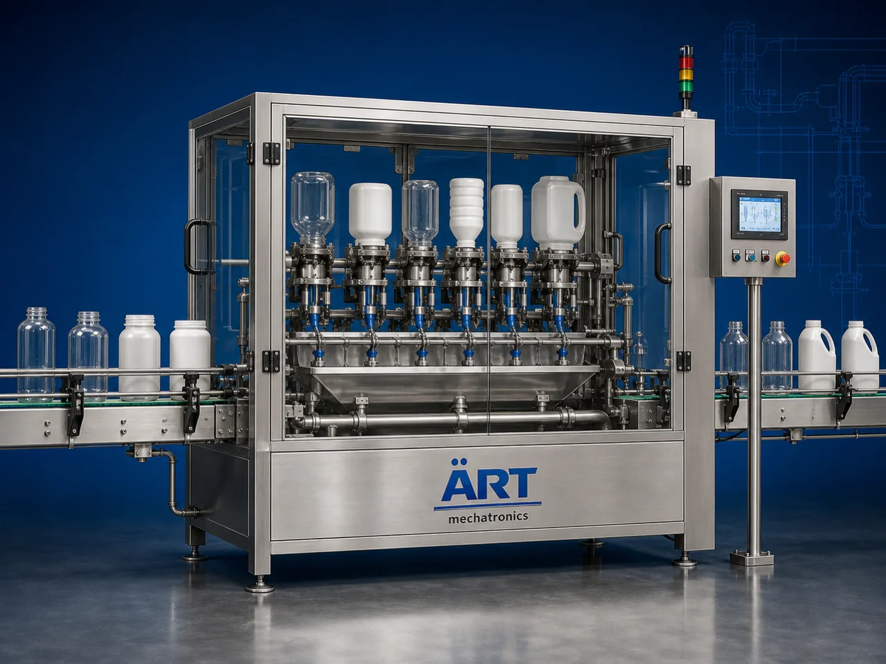

Container Rinsing Machine (Automatic Bottle, Jar & Drum Washing System)
A Container Rinsing Machine, also known as a Bottle Rinsing Machine, Jar Washing Machine, Container Cleaning Machine, or Automatic Container Washing System, is an advanced industrial packaging solution designed for automatic container feeding, internal rinsing, washing, sanitizing, air cleaning,…

About the Container Rinsing Machine
Container rinsing systems are widely used for: ✔ Bottle rinsing operations ✔ Jar washing and cleaning ✔ Jerry can sanitizing ✔ Drum washing applications ✔ Gallon container rinsing ✔ Food-grade container cleaning ✔ Beverage packaging hygiene operations ✔ Industrial container washing systems
The machine improves: ✔ Product hygiene ✔ Packaging cleanliness ✔ Contamination prevention ✔ Production efficiency ✔ Packaging quality ✔ Food safety compliance ✔ Product shelf life protection
Industrial container rinsing machines use: ✔ Automatic container feeding systems ✔ Servo synchronized handling systems ✔ PLC and HMI automation controls ✔ Water and air rinsing systems ✔ Sanitizing and drying mechanisms
to automatically clean and rinse containers with superior hygiene standards and high production efficiency.
Container rinsing machines are widely used in industries such as:
Beverage industries Food processing industries Pharmaceutical industries Chemical industries Cosmetic industries Lubricant industries Dairy industries FMCG industries
where hygienic packaging, contamination-free filling, and high-speed production are essential.
The machine is highly suitable for: ✔ Bottle rinsing ✔ Jar washing ✔ Gallon cleaning ✔ Drum sanitizing ✔ Jerry can washing ✔ Food-grade packaging preparation
ART Mechatronics offers high-performance container rinsing machines, engineered for continuous industrial operation, hygienic washing performance, accurate container cleaning, and reliable long-term packaging automation.
Working Principle of Container Rinsing Machine
- 1. Empty Container Feeding Containers are automatically fed into rinsing section through synchronized conveyor systems.
- 2. Container Positioning Process Machine automatically positions and inverts containers for internal rinsing and cleaning operations.
Servo synchronization ensures smooth container handling and accurate washing performance.
- 3. Rinsing & Washing Operation Machine handles: ✔ PET bottles ✔ Glass bottles ✔ Jars ✔ Jugs ✔ Jerry cans ✔ Drums ✔ Gallons ✔ Canisters
accurately and continuously.
- 4. Cleaning & Sanitizing Process Machine performs: Water rinsing Air rinsing Chemical sanitizing Sterile washing Drying integration
for hygienic and contamination-free packaging quality.
- 5. Inspection & Automation Integration Optional systems include: Air knife drying UV sterilization Vision inspection Water recycling systems Container rejection systems
- 6. Finished Container Discharge Cleaned containers discharged automatically for: Filling operations Capping Labeling Packaging lines
Types of Container Rinsing Machines
- 1. Bottle Rinsing Machine Designed for: ✔ Beverage and liquid bottle packaging applications
- 2. Jar & Jug Washing Machine Suitable for: ✔ Food and FMCG container cleaning systems
- 3. Jerry Can & Drum Washing Machine Uses: ✔ Heavy-duty industrial container washing systems
- 4. Air Rinsing Machine Designed for: ✔ Dust-free container cleaning operations
- 5. Servo Driven Container Rinsing Machine Suitable for: ✔ Precision high-speed washing operations
- 6. Fully Automatic Container Washing System Designed for: ✔ Complete industrial packaging automation lines
Industries Using Container Rinsing Machines
🥤 Beverage Industry Water bottles, juices, soft drinks, and beverage packaging hygiene systems. 🍅 Food Processing Industry Sauces, syrups, edible oils, and food container cleaning systems. 🥛 Dairy Industry Milk containers, dairy product jars, and hygienic packaging systems. 💊 Pharmaceutical Industry Medicine bottles and sterile healthcare packaging systems. ⚗️ Chemical Industry Industrial liquid containers and chemical packaging cleaning systems. 🛒 FMCG Industry Consumer product containers and retail packaging hygiene systems.
Features & Advantages
✔ High-speed automatic container rinsing operation ✔ Hygienic and contamination-free cleaning systems ✔ Water and air rinsing integration ✔ PLC and servo automation control systems ✔ Improves product hygiene and packaging quality ✔ Reduces manual cleaning dependency ✔ Supports multiple container sizes and formats ✔ Reliable long-term industrial performance ✔ Smooth and continuous packaging line integration
Technical Highlights
Machine Type: Automatic container rinsing machine Industrial washing system Bottle and container cleaning machine Container Type: PET bottles Glass jars Jerry cans Drums Gallons Buckets Industrial containers Cleaning Integration: Water rinsing systems Air rinsing systems Chemical sanitizing systems Drying systems Features: PLC control system Servo synchronization Touchscreen HMI Automatic container inversion Water recycling integration Applications: Food containers Beverage bottles Chemical drums Pharma bottles Industrial packaging containers Automation: Semi-automatic Fully automatic industrial systems
Turnkey Container Rinsing Solutions
ART Mechatronics offers: Complete container rinsing systems Automatic washing and sanitizing solutions Packaging automation integration systems Conveyor synchronization systems Installation & commissioning After-sales service & AMC
Why Choose Art Mechatronics
Expertise in industrial packaging and automation systems Customized container washing solutions for multiple industries High-performance and hygienic cleaning technology Advanced PLC and servo automation systems Proven industrial packaging performance across sectors
Applications
Beverage Manufacturing Plants Food Processing Industries Dairy Packaging Facilities Chemical Packaging Units Pharmaceutical Packaging Plants FMCG Packaging Industries
Get pricing & specs for the Container Rinsing Machine
Share the product, target capacity, current process and plant location. These details help our engineers discuss the right machine or line configuration.
One partner, from design to start-up
ART Mechatronics designs, manufactures, installs and commissions your Container Rinsing Machine solution with regional presence in India, UAE and Thailand.